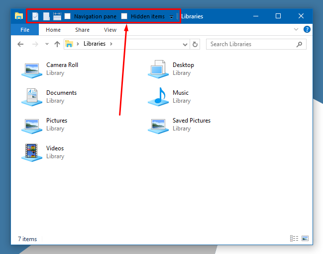

God damn Windows 10. Fucking File Explorer Crashed every time because something in QuickAccessToolbar was broken.

Deleting the following registry resets the QuickAccessToolbar HKEY_CURRENT_USER\Software\Microsoft\Windows\CurrentVersion\Explorer\Ribbon\QatUtems